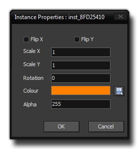

In a previous section of the manual (see Using GameMaker : Rooms) we covered the Settings, the Objects, and the Backgrounds tabs,
but there is still much that the room editor can do, and these advanced features will be covered in the sections below.
A very important tool when it comes to using the room editor is the Right Click Menu. If you place an instance within the room and then right click on it with the mouse, you will see the following pop-up menu :
- Delete : This will delete the instance selected.
- Delete All : This will delete all the instances found at the point where you clicked in the room.
- Edit Object : Use this to open the object properties window.
- Creation Code : This option opens up a code editor where you can add code into the specific instance that you have clicked on. This is a very powerful feature that allows you to further change individual instances of objects and so give several instances different values or variables to change their behaviour. This code is run after the normal create event, but before the room start event (see Using GameMaker : Events for the complete order of events).
- Instance Properties : Clicking this will open a further window where you can set some of the basic start properties for the instance, like blend color, image angle, scale and alpha. 
- Change Position : All this does is permit you to place the instance exactly at any position within the room. A window will open where you can input a new x and y position, and when you close it the instance will change to the new position.
- Snap to Grid : This will snap the instance to the nearest node of the defined room grid.
- Copy Selection : This will copy the currently selected instance (or instances) to the clipboard. Multiple instances can be selected using <Shift> and Left Clicking on them.
- Paste Selection : This will paste the instance (or instances) currently on the clipboard, and this can even be used in a different room so that you may copy instances from one room to another.
- Locked : Clicking this will "lock" the instance, meaning that it cannot be moved or deleted from the room without previously unlocking it again (right click and select "Locked" again to unlock).
- Rename Object Instance : This option permits you to give your instance a name. Normally an instance is given an "id" when it is created, which is usually something like "inst_A4F595D9". Now there are many moments when creating a game that you wish to refer to a specific instance through code, and remembering a name like that is not easy! So you can assign a name to it by selecting this and use that as a constant to refer to this instance from now on. Be aware that refrencing an instance in this way after it has been destroyed may cause an error.
- Copy Instance Name : Simply copies the name of the instance into the clipboard.
The remaining tabs in the room editor are detailed in the sections below :